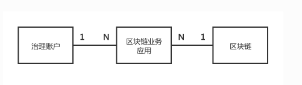

FISCO-Governance-账户
基本概念
1 区块链常用术语
- 外部账户: 私钥控制，没有代码关联，可以发起交易，外部账户的地址是由私钥生成的。
- 合约账户: 又称为用户账户。 合约部署生成，与代码关联，不可发起交易只能被外部账户调用。 合约账户的地址是在创建合约时确定的。
2 账户治理组件所引入的术语
- 区块链业务应用(Blockchain Business Application),基于区块链技术，实现和满足特定业务领域的需求。在一个区块链业务应用中，一般会依赖智能合约技术，其执行结果记录在分布式账本中。 在一个区块链网络中，可以发布多个区块链业务应用。 而在一个区块链业务应用中，最多只能定义一个治理账户。

治理账户(Governance Account)，区块链业务应用治理主体的管理账户。 该账户本身为合约账户，其账户关联了合约治理相关的代码，绑定了一个或一组外部账户。只有被绑定的外部账户才能操作此治理账户。
治理账户是合约账户
外部账户—–> 绑定—->治理账户 —–>关联——> 合约治理相关的代码普通账户(Normal Account), 区块链业务应用治理的对象。该账户本身为合约账户，该账户与另一个外部账户一一映射并被绑定，关联了状态、配置和操作的代码。 只有治理账户和被绑定的外部账户才能操作此普通账户。
普通账户为合约账户
外部账户—-> 映射—-> 普通账户(关联了状态、配置和操作的代码)账户管理者(Account Governance Administer), 在一个区块链业务应用中，区块链账户治理者负责直接管理和操作治理账户，即所谓的【区块链业务应用管理员】。 根据是否由单一机构管理，又可以划分为带有传统中心化管理特征的超级管理员和去中心化多结构协作的账户治理委员两类。 治理者行使账户的管理职能，支持对普通账户重置私钥、冻结、解冻、销户等操作。
治理模式(Governance Mode): 账户治理者所采用的的账户治理的方式，主要有两种，分为 管理员模式 和 治理委员会模式 (投票模式)。 其中，投票模式又可以根据投票者权重是否相等，进一步细分为多签投票制和权重投票制。
管理员模式:在一个区块链业务应用中，可以指定超级管理员治理模式: 在该模式下，治理账户由一个唯一的治理者来控制
账户治理委员会(Account Governance Committee), 在一个区块链业务应用中，通常是参与区块链业务应用的业务多方共同选出的一个委员会，共同参与账户治理。委员会成员拥有对账户治理事务的投票权，通过投票的方式，来决策和管理相关操作。 如果赞成的选票超过预先定义的阈值，则投票决策通过。
多签投票模式（Multi-Vote Mode） 如果治理委员会所有机构的投票权重相等且为1，则称为多签投票模式。
权重投票模式（Weighted-Vote Mode） 如果治理委员会所有机构的投票权重可以任意定义，则称为权重投票模式。多签投票模式也可以理解为一种特殊的权重投票模式，即所有治理委员会的投票权重为1。
社交好友重置机制（Social Friends Reset Mechanism），是指用户为普通账户设置一组关联的其他普通账户的地址，这些普通账户一般是用户的社交好友们的普通账户。一旦用户需要重置私钥，可通过联系好友发起重置申请，经过多个社交好友同意后，可重置用户普通账户所绑定的私钥。
组件介绍
1 背景
1.1 为什么需要引入账户治理？
在现有的区块链网络中，是以私钥为控制的中心进行设计的： 每个区块链的参与者首先创建一个私钥，通过这个私钥生成公钥并进一步生成外部账户；随后，参与者使用这个私钥对发起的交易报文进行签名并上链。参与者之间也可以通过外部账户的地址来识别和标识身份，完成相关的业务交互。可以说，这个私钥至关重要，一旦泄露或丢失，后果极为严重：
- 泄露以后，盗窃者可以任意控制该外部账户下所有的合约，发送任意的交易指令。
- 丢失以后，原有的用户会失去对该外部账户下所有的合约的控制，无法发送任何的交易指令。

1.2 账户治理机制是如何解决上述痛点的？
为了解决此问题，需要引入一种账户治理的机制，将原有的账户控制以私钥为中心，改为以普通账户为中心。
当用户发现泄露私钥后，可以自助发起重置普通账户所关联映射的私钥。当用户发现丢失私钥后，可以通过向账户治理委员会发起重置申请，更换私钥。 而且，当用户更换私钥后，普通账户的地址始终不变，保证了业务平滑运行。

除了解决这个核心痛点外，账户治理体系还额外引入了注册、冻结、解冻、销户等概念，使得在一个分布式协作的业务模式中，账户相关的操作形成了闭环和自洽的治理逻辑。这样，当一个基于区块链的业务系统涉及到链上的账户体系时，可以快速借助账户治理组件的功能，快速、灵活得实现账户体系的治理。
1.3 治理者应该如何进行账户治理？
在传统的中心化的解决方案中，存在一个超级管理员的角色，典型的如传统关系型数据库中的root超级管理员，拥有所有的权限。为了兼容这种需求，我们提供了超级管理员的账户治理模式。
但是，传统的中心化解决方案中，存在着权限独大、易被操纵、不利制衡的缺陷，无法满足日益蓬勃的多机构、分布式协作商业模式下的发展。如果链的运营是由一组对等的机构采用分布式协作的方式来管理，则推荐采用治理委员会模式。
治理委员会模式下的治理者通常是参与链的多方共同选出的一个委员会，由多个机构共同进行管理和决策。治理账户维护了一组投票帐号和每个账户对应的投票权重，投票通过的阈值。当某个操作的投票数量超过阈值时，才允许执行该操作。无论是平权还是不同权重，借助这种灵活的投票机制，可以满足大部分复杂场景的治理需求。

2 概览
WeBankBlockchain-Governance-Account是一套开源的区块链账户治理的中间件解决方案，提供了多种区块链账户治理模式、账户生命周期管理、用户自主管理区块链账户治理相关的整体解决方案，提供了包括
- 治理账户创建
- 多种治理模式选择
- 治理权限授权
- 账户创建、冻结、解冻、更换私钥、销户
等账户生命周期的各类账户管理功能。
2.1 关键特性
- 支持多种治理方式
- 去中心化的分布式协作治理思想
- 账户全生命周期的治理
- 全面、灵活的集成方式
- 支持可插拔的设计，对业务侵入小
- 支持国密
- 支持社交好友重置私钥
2.2 组成部分
WeBankBlockchain-Governance-Account包含了以下组成部分：
合约代码， 最核心的账户治理实现部分。 基于Solidity语言实现，完全适配FISCO BCOS。 理论上可在任何支持EVM虚拟机的区块链系统上运行。
Java SDK。适配了合约代码。通过集成Java SDK以后，可以适配和调用账户治理的所有合约接口。此外，进一步对使用接口进行简化和封装，可符合Java程序员的使用习惯。
合约集成Demo。提供了基于存证和积分转账场景的两个demo。（详情可参考合约中samples目录）
SDK集成Demo。提供了SDK集成和使用的demo，展示了如何使用Java SDK。
TDD测试代码。包含了全套的合约测试代码，轻松支持CI/CD。(详情可参考Java SDK中src/test/java目录下的代码)
web管理台 直接通过可视化页面来进行操作，正在开发中……
2.3 集成方式
在FISCO BCOS生态中，WeBankBlockchain-Governance-Account提供了以下使用和集成的方式：
- 通过部署治理合约来发布合约到链上，获得账户治理的能力；
- 通过在自身业务的合约中引入或集成账户治理合约；
- 通过SDK引入Jar包，集成到自己的Java项目中来调用提供的接口；
!()[https://governance-doc.readthedocs.io/zh_CN/latest/_images/acct_frame.png]
业务合约+治理合约； 治理合约调用业务合约
2.4 核心功能列表
2.4.1 治理者账户相关核心功能
- 重置用户私钥
- 冻结普通账户
- 解冻普通账户
- 注销普通账户
- 移交管理员权限（超级管理员模式下）
- 添加或修改一个治理委员会的投票账户（治理委员会模式下）
- 删除一个治理委员会的投票账户（治理委员会模式下）
- 设置投票阈值 （治理委员会模式下）


2.4.2 普通账户相关核心功能
- 创建一个新账户
- 重置用户私钥
- 注销账户
- 添加社交好友来支持重置账户私钥
- 添加或删除关联的社交好友
- 查询普通账户状态
- 查询外部账户是否已注册

2.5 业务流程介绍
- 确定治理方式，确定是采用超级管理员模式还是治理委员会模式。所有的治理者需准备和生成机构的私钥。
- 部署治理合约。根据步骤1确定的治理方式，发布对应的治理合约。
- 用户普通账户开户。用户预先准备好自己的私钥，通过调用步骤2所部署的治理合约所生成的控制合约来开户。
- 普通账户地址、状态查询。通过调用步骤2所部署的治理合约所生成的控制合约来查询用户地址和状态。
- 账户治理常规操作。治理者可发起和操作普通账户。包括了冻结、解冻、销户、重置私钥等普通账户类操作，以及修改投票阈值，修改成员投票权重、修改治理成员等治理账户类的操作。
- 普通账户自助操作。普通账户可发起重置私钥，设置账户管理模式，添加关联社交好友普通账户等操作。
- 普通账户销户。普通账户销户完成后，该账户生命周期终结。
快速开始
git clone https://gitee.com/WeBankBlockchain/Governance-Account.git
- 所有智能合约文件位于src/main/contracts路径下
- 合约demo位于src/main/contracts/samples路径下
- 合约测试代码位于src/test/java路径下
- 其余部分代码为Java SDK代码。
本博客所有文章除特别声明外，均采用 CC BY-SA 4.0 协议 ，转载请注明出处！